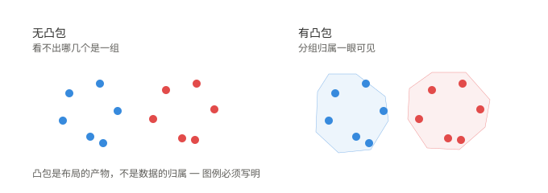
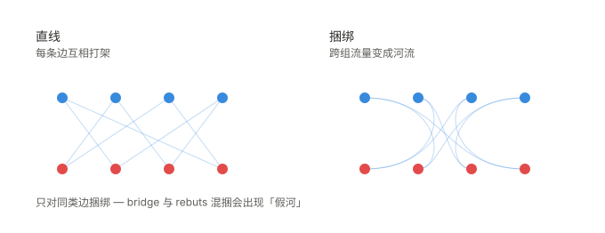
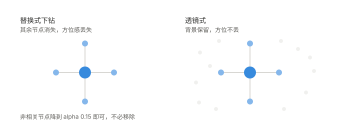
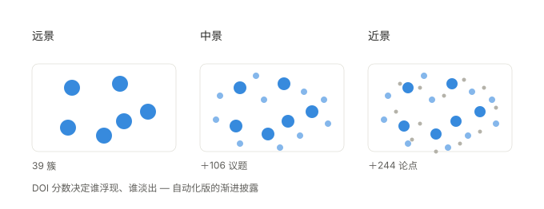
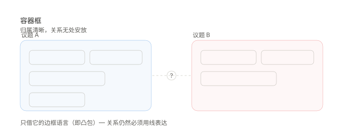
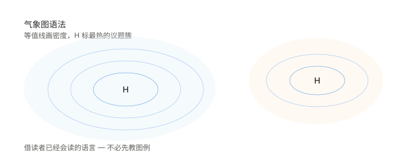
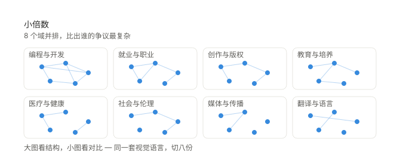
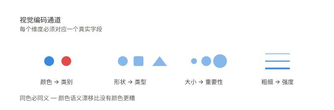

解决「这些节点是一伙的」看不出来的问题。给每组建一个包络多边形，低透明度填色，聚类自己就显形了。成本最低、收益最直接。 参考：bl.ocks 凸包分组实现。 注意包络只是布局产物，不是数据归属，图例必须写明。

解决边太多糊成毛线团。让边沿层级路由，同一走向的边自然聚成河流，跨组流量一眼可见。 参考：D3 官方实现、tension 参数讲解。 已知副作用是「假河」——不同类的边混捆会被读成同一种关系。

解决下钻时「不知道自己在哪」。不把无关节点移走，只降低透明度，全局方位感就保住了。 参考：iSphere（CHI 2017）、ACM Queue 交互综述。

解决「一屏塞不下」也不该塞。缩放时改变的不只是尺寸，还有显示什么——远景看簇，近景看论点，中间自动过渡。 进一步可用兴趣度分数决定谁浮现、谁淡出，不必让用户手动切档。
节点多到力导向排不开时的备选：沿环均匀排布，关系走弧线，空间利用率最高且天然不重叠。 代价是丢掉「距离≈语义距离」这一直觉。参考：弧长连接图与弦图案例。

用「框」表达归属，归属一眼可见——但框与框之间的关系无处安放，这是学术界已有结论的短板。 对我们的启示是只借它的边框语言（也就是第 1 条的凸包），关系仍然必须用线表达。 参考：论证可视化综述。

把抽象的「讨论密度」翻译成读者已经会读的语言：等值线画密度，H 标出最热的议题簇，不需要先教图例。 参考：Weather Map 在线实例。

大图看结构，小图看对比。同一套视觉语言切成八份并排，每个域的争议结构复杂度立刻可比。

颜色编码类别、形状编码类型、大小编码重要性、粗细编码强度——原则是「同色必同义」，且每个通道都必须对应一个真实字段。 参考：yFiles 知识图谱设计指南。
- 不引入不编码任何信息的装饰——发光、粒子、渐变本身不是设计感，是噪音。
- 不混类捆绑边——bridge 与 rebuts 捆在一起会出现「假河」。
- 不为配色新增字段——任何视觉维度都必须来自真实数据，否则踩溯源红线。